Next: Recursion
Up: The fussy language: Implementation
Previous: The power operator
Examples
Following are some examples to demonstrate as well as test the
correctness of the error propagation algorithm of
Section 3. In the following examples, various
functions are written in different algebraic forms and the results for
the different forms is shown to be exactly same (e.g.  vs.
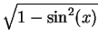, 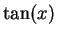 vs.
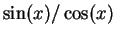). These
examples also verify that the combination of a function and its
inverse simply returns the argument (e.g
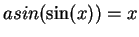), as well
as functions like
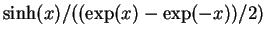 (which is really a
complicated way of writing
vs.
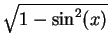, 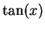 vs.
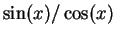). These
examples also verify that the combination of a function and its
inverse simply returns the argument (e.g
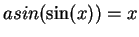), as well
as functions like
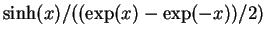 (which is really a
complicated way of writing  !) returns a value of with no error.
However, if the values of two independent variates 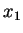 and 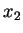 and
their corresponding errors are same, the value of expressions like
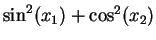 will be but the error will not be zero.
!) returns a value of with no error.
However, if the values of two independent variates 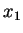 and 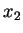 and
their corresponding errors are same, the value of expressions like
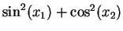 will be but the error will not be zero.
Value of x = 1.00000 +/- 0.10000
Value of y = 2.00000 +/- 0.20000
Value of x1 = 1.00000 +/- 0.10000
Value of x2 = 1.00000 +/- 0.10000
sin(x) = 0.84147 +/- 0.05403
sqrt(1-sin(x)^2) = 0.54030 +/- 0.08415
cos(x) = 0.54030 +/- 0.08415
tan(x) = 1.55741 +/- 0.34255
sin(x)/cos(x) = 1.55741 +/- 0.34255
asin(sin(x)) = 1.00000 +/- 0.10000
asinh(sinh(x)) = 1.00000 +/- 0.10000
atanh(tanh(x)) = 1.00000 +/- 0.10000
exp(ln(x)) = 1.00000 +/- 0.10000
sinh(x) = 1.17520 +/- 0.15431
(exp(x)-exp(-x))/2 = 1.17520 +/- 0.15431
sinh(x)/((exp(x)-exp(-x))/2) = 1.00000
x/exp(ln(x)) = 1.00000
sin(x1)*sin(x1) = 0.70807 +/- 0.09093
sin(x1)*sin(x2) = 0.70807 +/- 0.06430
sin(x1)^2+cos(x1)^2 = 1.00000 +/- 0.00000
sin(x1)^2+cos(x2)^2 = 1.00000 +/- 0.12859
Subsections
Sanjay Bhatnagar
2006-10-17